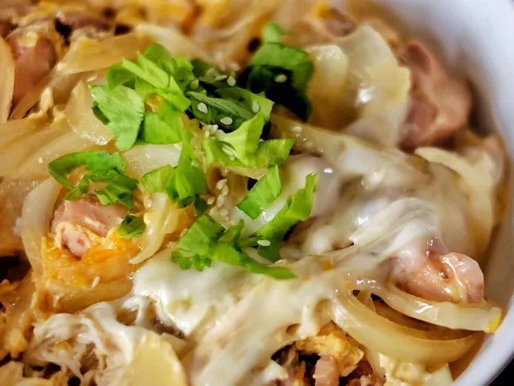

Home
Oyakodon recipe

Description
Oyakodon (親子丼) is a classic Japanese comfort dish whose name translates to "parent-and-child rice bowl," referring to its two main ingredients: chicken (parent) and egg (child). Tender pieces of chicken and onions are simmered in a savory-sweet broth made from dashi, soy sauce, and mirin, then topped with lightly beaten eggs that cook into a soft, custardy layer. Served over a bowl of steamed rice, the dish is simple yet deeply satisfying, with the silky eggs and flavorful broth soaking into the rice for a harmonious bite.
Popular for its quick preparation and hearty flavors, oyakodon is a staple in Japanese home cooking and casual eateries. Variations might include additions like mushrooms or mitsuba (Japanese parsley), but the focus remains on the tender chicken and creamy egg. Often garnished with scallions or shredded nori, it’s a comforting one-bowl meal that highlights the balance of umami, sweetness, and simplicity in Japanese cuisine.
Ingredients
- 1 tablespoon olive oil
- 4 skinless, boneless chicken thighs, cut into small pieces
- 1 onion, cut in half and sliced
- 2 cups dashi stock, made with dashi powder
- 1/4 cup soy sauce
- 3 tablespoons mirin (Japanese rice wine)
- 3 tablespoons brown sugar
- 4 large eggs
- 4 cups hot cooked white rice
Steps
- Heat oil in a large skillet over medium heat. Add chicken and cook until beginning to brown, about 5 minutes. Add onion; cook and stir until onion is translucent, about 5 minutes.
- Pour in stock, then whisk in soy sauce, mirin, and brown sugar; stir until sugar dissolves. Bring to a boil, then lower heat and simmer until slightly reduced, about 10 minutes.
- Whisk eggs in a bowl until well-beaten, then pour into the hot stock mixture. Cover the skillet, reduce the heat, and steam until egg is cooked, about 5 minutes. Remove from the heat.
- Divide rice among 4 deep soup bowls and top with equal amounts of the soup mixture.